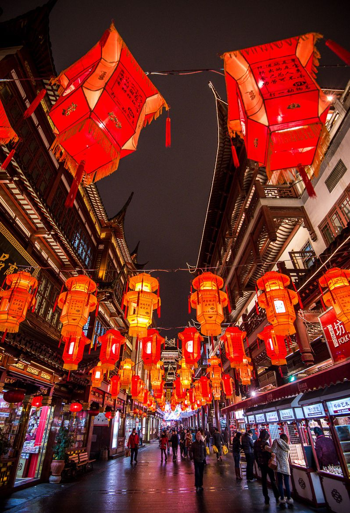

Be Up To Date!!!
Read and update yourself about some events taking place at the asian mother city.
Make room in your busy schedule and sneak one or two upcoming and bets believe that you will never live to regret it!!
Events
Read and update yourself about some events taking place at the asian mother city.
Make room in your busy schedule and sneak one or two upcoming and bets believe that you will never live to regret it!!
Starts from mid January and ends February monthend every year

Celebrated from mid October to early November

Celebrated on the 15th day of the lunar month and marks the end of the Chinese New Year
